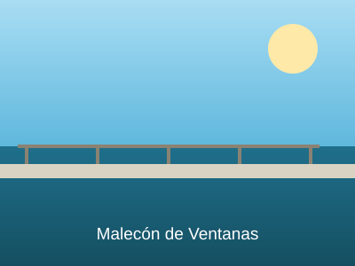
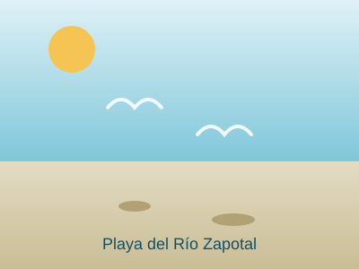
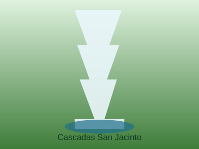
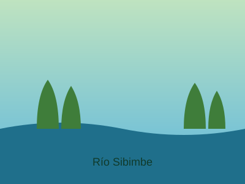
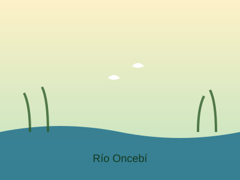
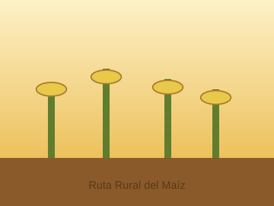

Malecón de Ventanas
Uno de los principales atractivos de la ciudad, ubicado junto al río Zapotal; es el centro de esparcimiento e identidad de los ventanenses.
Seis lugares imprescindibles para conocer la esencia natural y rural de Ventanas.

Uno de los principales atractivos de la ciudad, ubicado junto al río Zapotal; es el centro de esparcimiento e identidad de los ventanenses.

En verano se forman playas de arena y piedra sobre el río Zapotal, muy concurridas por locales y visitantes, especialmente en Carnaval.

Conjunto de tres cascadas en escalinata de aproximadamente 25 metros de altura, a una hora de caminata desde el centro poblado.

En verano forma pequeñas playas de arena y piedra ideales para el descanso; en invierno es un río más caudaloso.

Ubicado en la parroquia rural de Chacarita, es visitado principalmente en verano por su fácil acceso y aguas tranquilas.

Ventanas celebra cada año el Día Nacional del Maíz; sus haciendas rurales muestran el cultivo tradicional montuvio de maíz y otros productos.
Combina varios atractivos en un solo paquete turístico diseñado para ti.
Ver paquetes turísticos